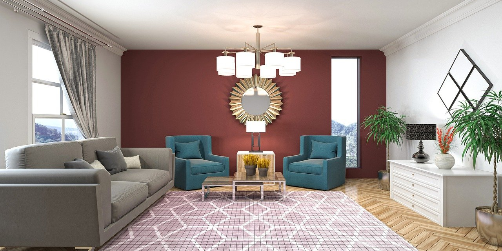

About Us
With over 35+ years of experience, we can assure you that our work is unparalleled when it comes to giving your home and offices a makeover. We work with the industry’s leading producers and manufacturers to deliver the most authentic and genuine products. We give you a huge range of products to select from, including Blinds, Awnings, Wallpapers, Curtains, Furniture, Flooring. Our employees have exceptional knowledge in this field to give you the best services because we believe in utmost customer satisfaction.
Projects

Placement Prediction
It is a Machine Learning project based upon the Placement Data set available on Kaggle. The Random Forest model was used after a detailed model search. Feature selection and hyperparameter tuning were performed to improve accuracy from 77% to 82.8%. Also, developed a Web Application based on Streamlit framework, sharing exciting insights alongside an interface to the model.

Single Largest Object Detection
It is Deep Learning based Single Largest Object Detection model that uses Transfer Learning to achieve an impressive 81.6% accuracy. A custom head was used on the ResNet50 to create the model. Pascal VOOC 2007 was the dataset used to train our model. Transfer Learning helped reduce computational requirements and data requirements significantly.

Smarter Charts
We often encounter graphs such as Pie Charts and Bar Graphs in various documents. Often, the graphs are just images that were generated. Thus, they cannot be directly used to extract data and work our way further. Smarter Charts is a tool that extracts the data from the images and arranges them in an excel file. There are other tools that can digitize images. However, none of the non-proprietary tools was as quick and straightforward to use as Smarter Charts. They required manual interference in detecting the center or marking the axes though they were a bit more accurate than Smarter Charts in some cases.